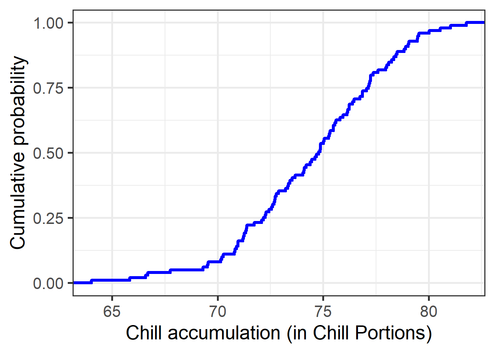

Chapter 12 Generating temperature scenarios
12.1 Learning goals
- Understand what a weather generator is, (roughly) how it works and why it is useful for planning
- Learn how to run the
temperature_generationfunction included inchillR - Be able to produce chill profiles for a place of interest using histograms and cumulative distributions
- Understand what Safe Winter Chill is and be able to calculate it
12.2 Chill scenarios
The main goal so far has been to understand chill availability and other agroclimatic conditions at specific sites, which is essential for orchard managers choosing tree species and cultivars. While historical data has been helpful, growers need more tailored, site-specific information. They need a forecast of likely conditions - such as expected chill or heat levels - to make better planting decisions.
12.3 Risk assessment in orchard planning
Because trees are long-lived, they encounter varied temperature patterns throughout their productive years. For optimal yields, trees must meet their climatic requirements every year. Therefore, selecting suitable trees requires understanding the plausible range of weather conditions at a site, helping managers choose trees that reliably meet chill needs or balance early flowering with frost risk. This range is determined by the local climate - essentially, the average of yearly weather patterns, representing all potential weather scenarios from which each year is a random outcome.
Annual weather can be interpreted as a random sample from the full distribution of possible weather conditions. For planning, however, it is more useful to understand this entire distribution rather than relying solely on the randomly observed years. So far, only these samples from historical chill data have been available. In this lesson, the goal is to determine the actual climate pattern to develop temperature profiles for specific locations that support orchard planning.
12.4 Weather generators
The best way to characterize the climate of a specific location is through long-term weather records collected there. Such records allow calculation of average monthly temperatures, rainfall extremes, frost frequency, and other metrics. The detail level for describing local climate can vary, and producing realistic weather data requires a certain sophistication.
Weather generators differ significantly in how they model climate, and understanding their methods would help in choosing the best option. For chillR, the weather generator must be R-compatible and align with chillR’s structure. Currently, only one generator RMAWGEN meets these requirements, limiting choice. Previously, tools like LARS-WG, which uses both temperature and rainfall data to model distinct dry and wet spell profiles, were used in analyses (Luedeling et al., 2011a, 2011b). The chillR tool doesn’t need precipitation data but performs well overall. However, evaluating these tools remains challenging, indicating potential for further improvement.
12.5 Weather generation in chillR
chillR uses the RMAWGEN weather generator, currently the only R-based option found, and has shown to be reliable after initial setup challenges. However, chillR currently generates only temperature data, without comprehensive weather simulation capabilities—a limitation that is being addressed by further development, initiated by Lars Caspersen.
The function temperature_generation in chillR requires calibration using long-term temperature data in chillR format, enabling it to calculate parameters that define the local climate. These parameters are then applied to simulate synthetic temperature data over a specified number of years.
For practice, the Klein-Altendorf dataset (KA_weather) is used as an example. To use temperature_generation, a few key inputs are needed:
- years: a vector specifying the years from observed data to characterize the climate.
- sim_years: the years to simulate, used only for labeling purposes in the output dataset.
An additional option, temperature_scenario, will be discussed later; initially, its default zero values trigger a warning, which can be ignored for now. The next step is to run the weather generator to compare simulated data with observed records.
Temp <- KA_weather %>%
temperature_generation(years = c(1998, 2009),
sim_years = c(2001,2100))
Temperatures <- KA_weather %>% filter(Year %in% 1998:2009) %>%
cbind(Data_source = "observed") %>%
rbind(
Temp[[1]] %>% select(c(Year,
Month,
Day,
Tmin,
Tmax)) %>%
cbind(Data_source = "simulated")
) %>%
mutate(Date = as.Date(ISOdate(2000,
Month,
Day)))ggplot(data = Temperatures,
aes(Date, Tmin)) +
geom_smooth(aes(colour = factor(Year))) +
facet_wrap(vars(Data_source)) +
theme_bw(base_size = 20) +
theme(legend.position = "none") +
scale_x_date(date_labels = "%b")ggplot(data=Temperatures,
aes(Date,Tmax)) +
geom_smooth(aes(colour = factor(Year))) +
facet_wrap(vars(Data_source)) +
theme_bw(base_size = 20) +
theme(legend.position = "none") +
scale_x_date(date_labels = "%b")
The previous plot was created using geom_smooth in ggplot, rather than geom_line, which reduced noise in the dataset and made the figure easier to interpret.
Overall, the temperature trends were captured well, though some local weather nuances may have been missed. The simulated dataset now contains 100 years of data, even though only 8 years were used for calibration. This expanded dataset allows for a clearer understanding of the frequency of specific temperature-related events. Next, the distribution of winter chill for Klein-Altendorf will be examined based on this analysis.
chill_observed <- Temperatures %>%
filter(Data_source == "observed") %>%
stack_hourly_temps(latitude = 50.4) %>%
chilling(Start_JDay = 305,
End_JDay = 59)
chill_simulated <- Temperatures %>%
filter(Data_source == "simulated") %>%
stack_hourly_temps(latitude = 50.4) %>%
chilling(Start_JDay = 305,
End_JDay = 59)
chill_comparison <-
cbind(chill_observed,
Data_source = "observed") %>%
rbind(cbind(chill_simulated,
Data_source = "simulated"))
chill_comparison_full_seasons <-
chill_comparison %>%
filter(Perc_complete == 100)The data can now be easily visualized using ggplot:
ggplot(chill_comparison_full_seasons,
aes(x = Chill_portions)) +
geom_histogram(binwidth = 1,
aes(fill = factor(Data_source))) +
theme_bw(base_size = 20) +
labs(fill = "Data source") +
xlab("Chill accumulation (Chill Portions)") +
ylab("Frequency")In the previous code, incomplete winter seasons were manually removed. The resulting histogram shows the distribution of chill that would have been reasonable to expect in Klein-Altendorf between 1998 and 2005. With more observations, these distributions would improve.
These data can also be plotted as a cumulative distribution function, which helps assess the risk of falling below a certain level of chill accumulation. This can also be directly calculated using the quantile function.
chill_simulations <-
chill_comparison_full_seasons %>%
filter(Data_source == "simulated")
ggplot(chill_simulations,
aes(x = Chill_portions)) +
stat_ecdf(geom = "step",
lwd = 1.5,
col = "blue") +
ylab("Cumulative probability") +
xlab("Chill accumulation (in Chill Portions)") +
theme_bw(base_size = 20)# Here's the amount of chill that is exceeded in 90% of all years.
quantile(chill_simulations$Chill_portions,0.1)## 10%
## 77.21767# and here's the 50% confidence interval (25th to 75th percentile)
quantile(chill_simulations$Chill_portions, c(0.25,0.75))## 25% 75%
## 79.68650 84.76564The 10% quantile calculated above represents what is referred to as “Safe Winter Chill.” This concept is illustrated in the following figure:

The process for generating the data for this figure is similar to the one used previously, although different tools were employed at the time. The concept of Safe Winter Chill is based on the idea that a grower might tolerate a small risk of not meeting a tree’s chilling requirement. If a tree’s chilling requirement exactly matches the Safe Winter Chill for a site, chill-related issues can be expected roughly one in every ten years. Whether this level of risk is acceptable depends on the grower’s tolerance, but it provides a reasonable threshold. A similar metric can be calculated for growers with different risk tolerances.
12.6 Exercises on temperature generation
- For the location you chose for your earlier analyses, use chillR’s weather generator to produce 100 years of synthetic temperature data.
Yakima <- read.csv("Yakima/Yakima_weather.csv")
Temp <- Yakima %>%
temperature_generation(years = c(1998, 2009),
sim_years = c(2001, 2100))
Temperatures <- Yakima %>%
select(Year, Month, Day, Tmin, Tmax) %>%
filter(Year %in% 1998:2009) %>%
cbind(Data_source = "observed") %>%
rbind(
Temp[[1]] %>% select(c(Year, Month, Day, Tmin, Tmax)) %>%
cbind(Data_source = "simulated")
) %>%
mutate(Date = as.Date(ISOdate(2000, Month, Day)))ggplot(data = Temperatures,
aes(Date,
Tmin)) +
geom_smooth(aes(colour = factor(Year))) +
facet_wrap(vars(Data_source)) +
theme_bw(base_size = 20) +
theme(legend.position = "none") +
scale_x_date(date_labels = "%b")
ggplot(data = Temperatures,
aes(Date,
Tmax)) +
geom_smooth(aes(colour = factor(Year))) +
facet_wrap(vars(Data_source)) +
theme_bw(base_size = 20) +
theme(legend.position = "none") +
scale_x_date(date_labels = "%b")
- Calculate winter chill (in Chill Portions) for your synthetic weather, and illustrate your results as histograms and cumulative distributions.
chill_observed <- Temperatures %>%
filter(Data_source == "observed") %>%
stack_hourly_temps(latitude = 46.6) %>%
chilling(Start_JDay = 305,
End_JDay = 59)
chill_simulated <- Temperatures %>%
filter(Data_source == "simulated") %>%
stack_hourly_temps(latitude = 46.6) %>%
chilling(Start_JDay = 305,
End_JDay = 59)
chill_comparison <-
cbind(chill_observed,
Data_source = "observed") %>%
rbind(cbind(chill_simulated,
Data_source = "simulated"))
chill_comparison_full_seasons <-
chill_comparison %>%
filter(Perc_complete == 100)ggplot(chill_comparison_full_seasons,
aes(x = Chill_portions)) +
geom_histogram(binwidth = 1,
aes(fill = factor(Data_source))) +
theme_bw(base_size = 20) +
labs(fill = "Data source") +
xlab("Chill accumulation (Chill Portions)") +
ylab("Frequency")
chill_simulations <-
chill_comparison_full_seasons %>%
filter(Data_source == "simulated")
ggplot(chill_simulations,
aes(x = Chill_portions)) +
stat_ecdf(geom = "step",
lwd = 1.5,
col = "blue") +
ylab("Cumulative probability") +
xlab("Chill accumulation (in Chill Portions)") +
theme_bw(base_size = 20)
- Produce similar plots for the number of freezing hours (<0°C) in April (or October, if your site is in the Southern Hemisphere) for your location of interest
df <- data.frame(
lower = c(-1000, 0),
upper = c( 0, 1000),
weight = c( 1, 0))
freezing_hours <- function(x) step_model(x,df)
chill_observed <- Temperatures %>%
filter(Data_source == "observed") %>%
stack_hourly_temps(latitude = 46.6) %>%
tempResponse(Start_JDay = 91,
End_JDay = 120,
models = list(Frost = freezing_hours,
Chill_portions = Dynamic_Model,
GDH = GDH))
chill_simulated <- Temperatures %>%
filter(Data_source == "simulated") %>%
stack_hourly_temps(latitude = 46.6) %>%
tempResponse(Start_JDay = 91,
End_JDay = 120,
models=list(Frost = freezing_hours,
Chill_portions = Dynamic_Model,
GDH = GDH))
chill_comparison <-
cbind(chill_observed,
Data_source = "observed") %>%
rbind(cbind(chill_simulated,
Data_source = "simulated"))
chill_comparison_full_seasons <-
chill_comparison %>%
filter(Perc_complete == 100)ggplot(chill_comparison_full_seasons,
aes(x = Frost)) +
geom_histogram(binwidth = 25,
aes(fill = factor(Data_source))) +
theme_bw(base_size = 10) +
labs(fill = "Data source") +
xlab("Frost incidence during April (hours)") +
ylab("Frequency")
chill_simulations <-
chill_comparison_full_seasons %>%
filter(Data_source == "simulated")
ggplot(chill_simulations,
aes(x = Frost)) +
stat_ecdf(geom = "step",
lwd = 1.5,
col = "blue") +
ylab("Cumulative probability") +
xlab("Frost incidence during April (hours)") +
theme_bw(base_size = 20)